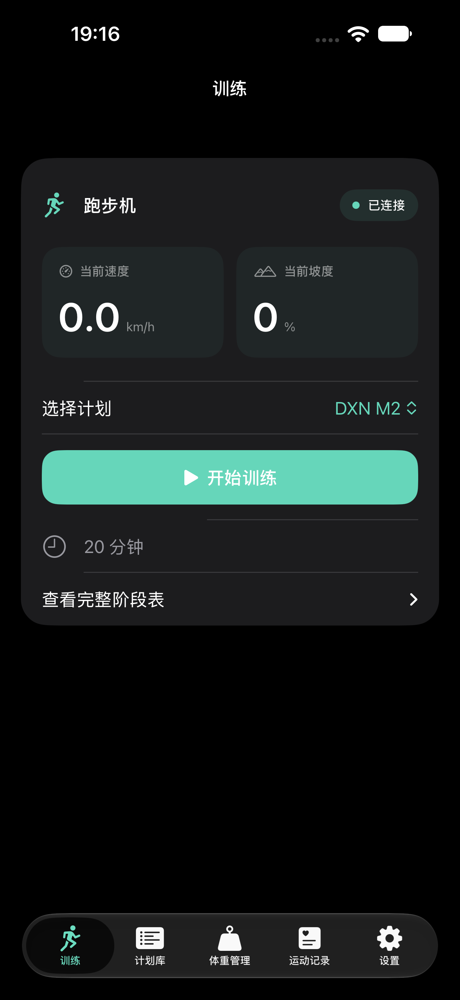
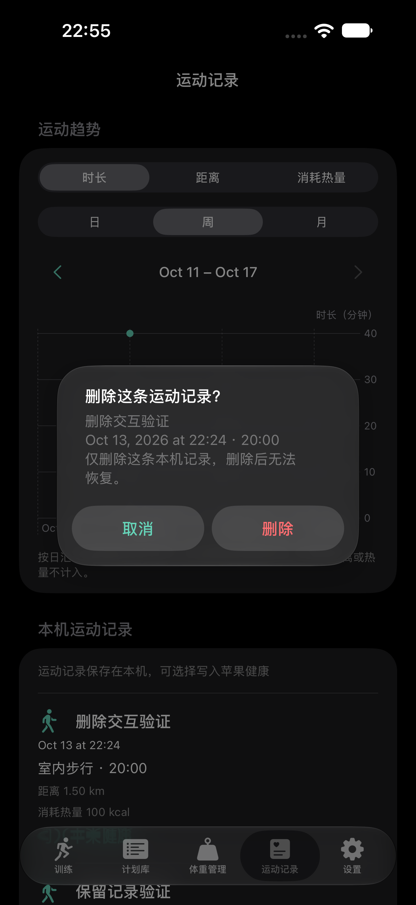
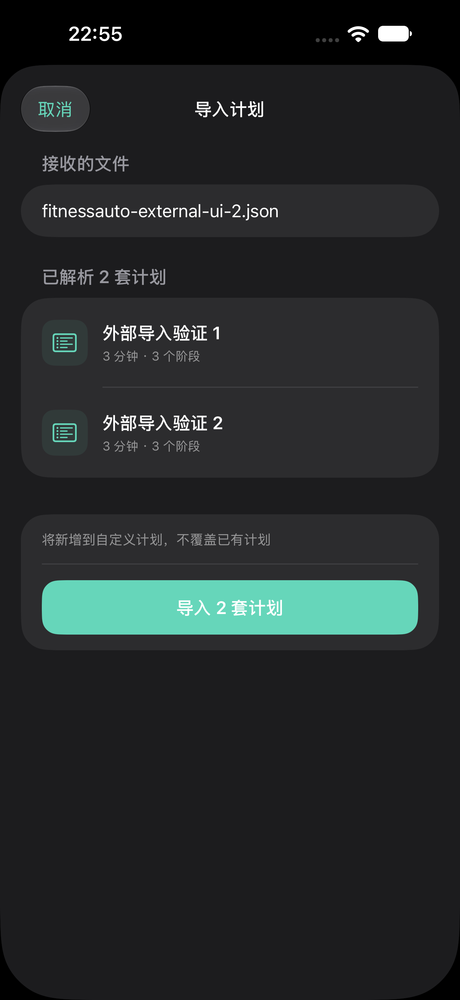
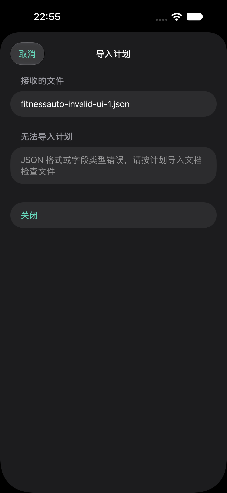

已实现：训练效果图复用实际 SwiftUI 控件，通过模拟器示例状态展示；删除和导入截图来自真实页面。真机启停、健康删除以及 AirDrop／分享菜单入口仍按 checklist 单独验收。

旧弹窗浮在曲线图上。改为居中系统确认框，列明记录身份和删除范围，保留取消操作。原生系统弹窗的最终外观随 iOS 版本变化。

10 月 13 日 21:54
室内步行 · 20:00
DXN M2
10 月 13 日 21:54 · 20:00
本机记录及本 APP 写入的对应苹果健康数据会一起删除。删除后无法恢复。
AirDrop／文件分享 → 用 FitnessAuto 打开 → 计划库导入摘要 → 确认导入。文件关联入口与来源 APP 的分享能力需真机验收。


已解析 2 套计划
20 分钟 · 18 个阶段
30 分钟 · 12 个阶段
将新增到自定义计划，不覆盖已有计划。